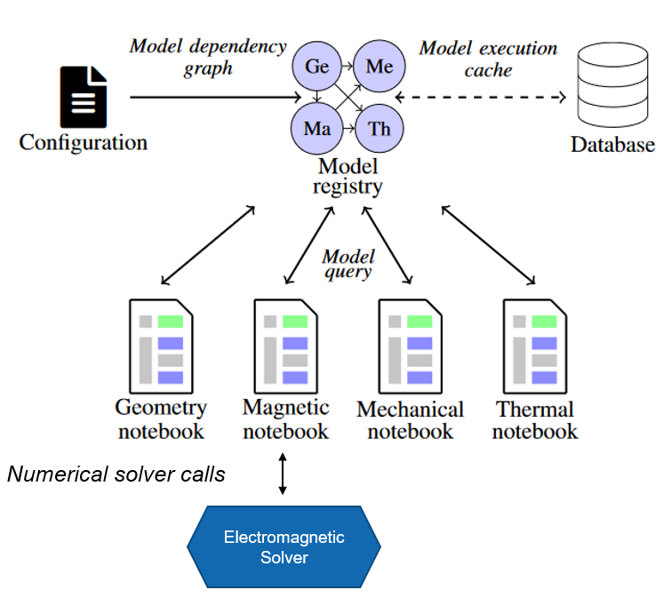
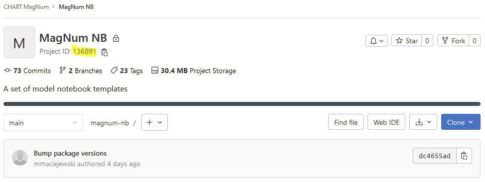
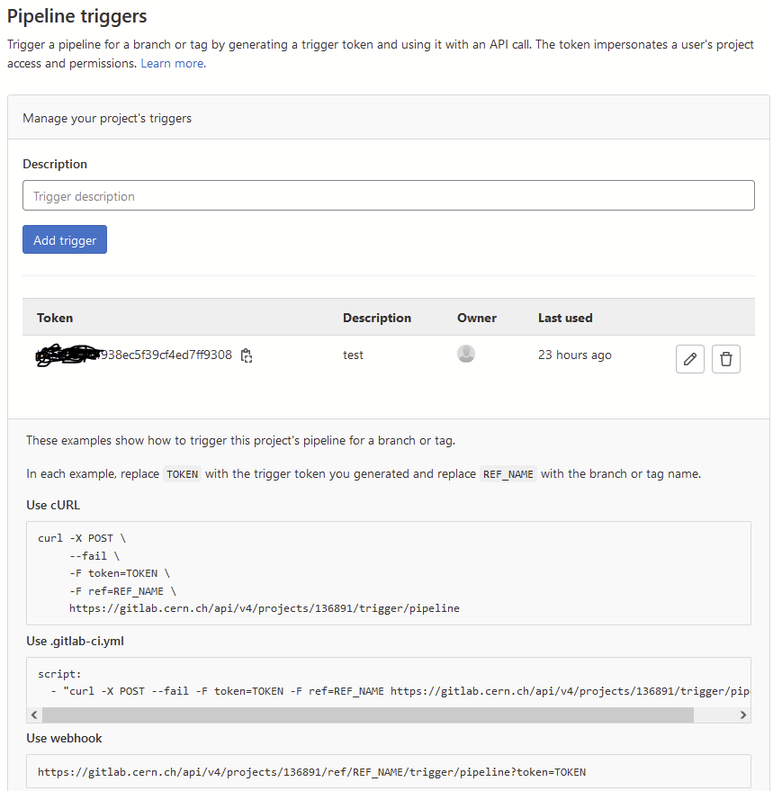
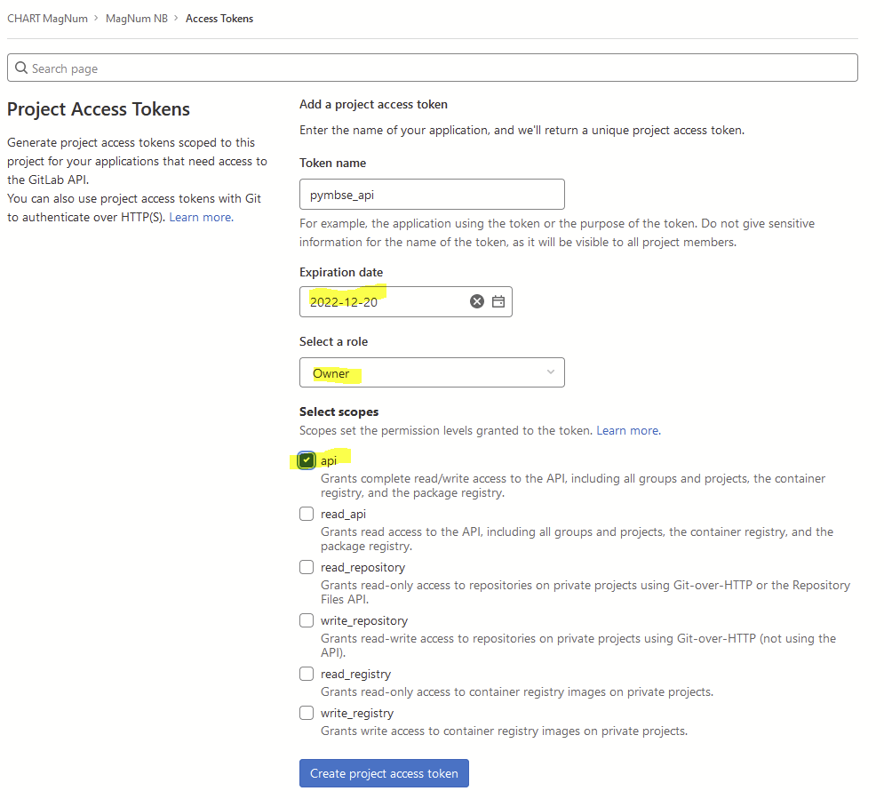

PyMBSE
Contents
PyMBSE#
PyMBSE project aims at providing an API query mechanism for notebook-based numerical models.

The package is composed by two modules
pymbse.query- an API providing a model query mechanism to exchange information either as figures of merit (scalar, vector parameters) or artefacts (output files of various type)pymbse.microservicean API providing a numerical solver query mechanism. A numerical solver is encapsulated in a container and the API provides endpoints to initialize a working directory, upload input files, run a solver, and download the artefacts
Getting Started#
Python version is 3.9+ along with pymbse package. The pymbse package is available at PyPI and can be installed with pip install pymbse.
We suggest to use a virtual environment to avoid clashes with globally installed packages.
For model query cache database installation, please consult http://gitlab.cern.ch/chart-magnum/pymbse-cache
NOTE
Note that the PyMBSE model query mechanism works without a cache database. In this case, however, each model is always executed, which may lead to an excessive computation time.
Configuration File#
A configuration file provides information about the cache database and the model definition. The configuration file contains two keys
Cache database configuration -
database
The cache database stores snapshots of executed models in order to quickly retrieve both artefacts and output files. To access the cache database one needs to provide a pair ofipandport.Model(s) definition -
models
modelsis a dictionary mapping from tags to model definitions. A model tag is a string referring to a model.A model definition is a dictionary. There are two modes for model execution: local and distributed (with GitLab). The keys of a local python notebook or a pythons script are explained in a table below.
Key |
Value Type |
Value Meaning |
|---|---|---|
|
|
An absolute path to a model notebook. The path relates either to a location on host if jupyter server runs on host, or a location in a container for jupyter server running on the container. |
|
|
Allowed values are: |
|
|
A list of relatives paths (relative w.r.t. the model root directory taken from the |
|
|
A list of model tags on which a given model depends. Dependencies are used to construct a model dependency graph, which has to form a directed, acyclic graph. |
For keys of a remote (GitLab) notebook are given in the following table
Key |
Value Type |
Value Meaning |
|---|---|---|
|
|
A GitLab project URL with notebooks to execute |
|
|
Name of a branch or tag with a particular version of notebooks to execute |
|
|
Relative path to a model w.r.t. the repository root |
|
|
Time sleep for checking whether the triggered pipeline with notebook execution has been completed. |
|
|
Allowed values are: |
|
|
A list of relatives paths (relative w.r.t. the model root directory taken from the |
|
|
A list of model tags on which a given model depends. Dependencies are used to construct a model dependency graph, which has to form a directed, acyclic graph. |
An example of a model configuration file is given below.
database:
ip: cache_rest
port: 8000
models:
geometry:
model_abs_path: "/home/magnum/demo/geometry/Geometry.ipynb"
model_type: "NOTEBOOK_SCRIPT"
input_files: [ "input/16T_rel.json",
"../input/roxieold_2.cadata"]
needs: [ ]
magnetic:
model_abs_path: "/home/magnum/demo/magnetic/ROXIE.ipynb"
model_type: "NOTEBOOK_SCRIPT"
input_files: [ "../input/roxieold_2.cadata" ]
needs: [ "geometry" ]
magnetic_current:
model_abs_path: "/home/magnum/demo/magnetic/ROXIE_Current.ipynb"
model_type: "NOTEBOOK_SCRIPT"
input_files: [ "../input/roxieold_2.cadata" ]
needs: [ "geometry" ]
mechanical:
model_abs_path: "/home/magnum/demo/mechanical/ANSYS.ipynb"
model_type: "NOTEBOOK_SCRIPT"
input_files: [ "input/Mechanic_Plate/15T_bc.inp",
"input/Mechanic_Plate/15T_Coil_geo.inp",
"input/Mechanic_Plate/15T_contact_el_m.inp",
"input/Mechanic_Plate/15T_contact_mesh.inp",
"input/Mechanic_Plate/15T_geometry_main.inp",
"input/Mechanic_Plate/15T_mat_and_elem.inp",
"input/Mechanic_Plate/15T_mech.inp",
"input/Mechanic_Plate/15T_mech_post_roxie.inp",
"input/Mechanic_Plate/15T_mech_solu.inp",
"input/Mechanic_Plate/15T_Yoke_geo.inp",
"input/Mechanic_Plate/CoilBlockMacro_Roxie.mac",
"input/Mechanic_Plate/ContactPropMacro.mac" ]
needs: [ "geometry", "magnetic" ]
thermal:
model_abs_path: "/home/magnum/demo/thermal/MIITs.ipynb"
model_type: "NOTEBOOK_SCRIPT"
input_files: [ "../input/roxieold_2.cadata" ]
needs: [ "geometry", "magnetic" ]
thermal_gitlab:
project_url: "https://gitlab.cern.ch/api/v4/projects/136891"
branch_or_tag: "main"
model_rel_path: "demo/thermal/MIITs_GitLab.ipynb"
time_sleep_in_sec: 1
model_type: "GITLAB_NOTEBOOK"
input_files: []
needs: []
GitLab Pipeline Trigger#
A distributed notebook execution is implemented as triggering of a pipeline running on a dedicated executor.
Project URL contains project ID at the end. In the example above it is 136891.
The ID is available at the main project page.

In addition, for GitLab two environment variables need to be set for PyMBSE to work:
pipeline token
Pipeline trigger is created by going to Settings -> CI/CD -> Pipeline triggers

Set the pipeline trigger as an environment variable:
export PIPELINE_TRIGGER=your_pipeline_trigger
private token for API
Private token is created by going to Settings -> Access Tokens

For the security sake set an expiry date, Owner as role, and api for the scope.
Set the private token as an environment variable:
export PRIVATE_TOKEN=your_private_token
Model Query API#
Model Query API provides 5 endpoints to execute models and retrieve figures of merit, artefacts, and reports.
In the following we assume that the configuration file (displayed above) is available in the current working directory as model_configuration.yml.
Query for figures of merit
Return type:
dictKeys: name of a figure of merit as an
strtypeValues: either a scalar or multi-dimensional value
from pymbse.query.api import PyMBSE
PyMBSE(config_path="model_configuration.yml", source_model="magnetic", target_model="geometry", inputs={...}).build().get_figures_of_merit()
Example#
Query for all artefacts
Return type:
dictKeys: artefact names as
strValues: binary artefact content as an
strtype
from pymbse.query.api import PyMBSE
PyMBSE(config_path="model_configuration.yml", source_model="magnetic", target_model="geometry", inputs={...}).build().get_artefacts()
Query for an artefact
Return type:
str
from pymbse.query.api import PyMBSE
PyMBSE(config_path="model_configuration.yml", source_model="magnetic", target_model="geometry", inputs={...}).build().get_artefact(name="geometry")
Query for an HTML report
Return type:
strwith executed HTML report
from pymbse.query.api import PyMBSE
PyMBSE(config_path="model_configuration.yml", source_model="magnetic", target_model="geometry", inputs={...}).build().get_html_report()
Query for a Notebook file with outputs
Return type:
strwith executed notebook content
from pymbse.query.api import PyMBSE
PyMBSE(config_path="model_configuration.yml", source_model="magnetic", target_model="geometry", inputs={...}).build().get_ipynb_report()
Microservice API#
Although, the microservice API provides ve functions:
initupload_input_filesrunget_artefact_namesdownload_artefacts
we grouped the first three functions into one init_upload_and_run to prepare and run a simulation in one shot.
An example for ROXIE electromagnetic solver is given below.
NOTE
In the following we assume that a ROXIE container with REST-API (for more details please consult http://gitlab.cern.ch/roxie/roxie-rest-api) is running on
localhostat port8080. In addition, atest_model.dataandroxie.cadataare available in the working directory (otherwise one needs to adjust the paths).
from pymbse.microservice.api import init_upload_and_run, download_artefact
url_with_port = "http://roxie:8080"
model_name = "test_model"
input_files = [f"{model_name}.data", "roxie.cadata"]
model_name, timestamp, output_lines, artefact_names = init_upload_and_run(url_with_port, model_name, input_files)
input_dir = "."
for artefact_name in artefact_names:
download_artefact(url_with_port, model_name, timestamp, input_dir, artefact_name)